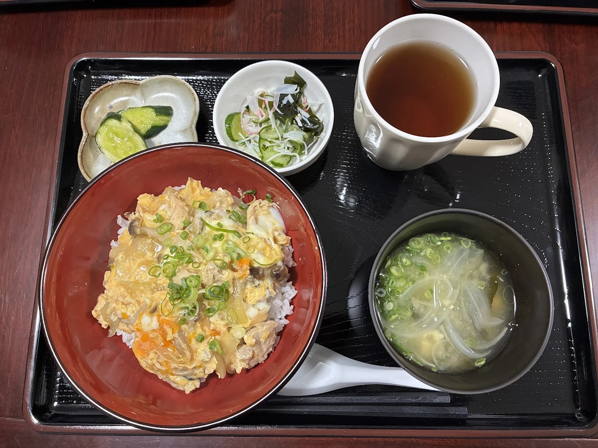
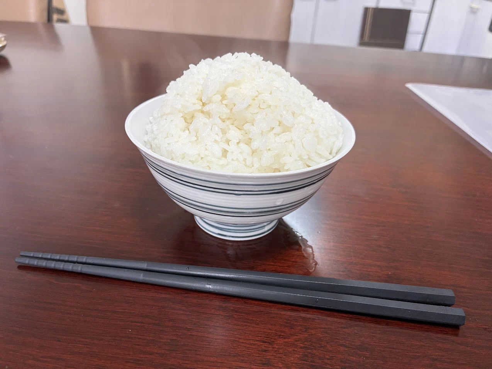

調理と食事提供
目次
※写真資料は追って追加予定です。
① はじめに
いせっちでは、食事は一日の最大のご褒美だと考えています。無理にこだわった料理を作る必要はありませんし、スーパーの総菜や冷凍食品を使うこともOKなので、利用者さんがほっとする料理の提供をお願いいたします。
LINEワークスの前後のやりとりを鑑みながら、得意料理や利用者さんに食べてもらいたいもの、自分が食べたいものを作ってください。

以下、主な注意点です。
- 私たちはチームで料理提供をしています。各スタッフの調理技術にも差もあります。利用者さんがスタッフの選り好みをしないよう、可能な限りでバランスを取るよう心掛けてください。
- 利用者さんのアレルギーや好き嫌いの確認をお願いします。※利用者情報ページをご参照ください。
- 利用者が「味が薄い」と訴える場合は、提供したスタッフの判断で調味料を追加することはOKです。追加の加減が難しい利用者さんもいるので、追加対応は必ずスタッフが行ってください。
② 感染症対策
以下ルールの徹底をお願いします。
- ナマ肉や魚を調理したまな板や包丁は利用の都度、必ず洗剤で洗ってください。また調理をした手も都度洗いましょう。生食する野菜やお皿などの備品に触れないようにしてください。
- 大皿料理、鍋料理そのまま等の提供はしません。手間ですが個別取り分けをお願いします。
- 自宅、ホーム外での事前調理はNGとします。レパートリーの幅は狭まりますが、ホームについてから、ホームの道具のみで調理をしてください。
③ 食事提供ルール
夕飯、朝食はみなさん食べて頂く、というのが基本です。料金設定は下記のとおりです。
a. 利用者が払う料金
朝・夕食はみなさん召し上がって頂くというのが基本です。
- 朝食350円、夕食650円
- 昼食400円、自炊おにぎり100円
※実食分に応じて、翌月に利用者に請求します。
b. 提供の記録
ケア・オールでの入力とともに、「食事提供チェックシート」にも記入をお願いします。
※スタッフが食べる分は会社負担となります。チェックを忘れないようお願いします。
c. 片付け
食べ終わった順で、利用者さんに自分のお皿等を洗って頂きます。
全員の食事が終わったら、スタッフは洗い物のダブルチェックをお願いします。
d. 食事提供が不要な場合
前々日の20時までに「食事不要届」を提出してもらいます。
受領したスタッフはサインのうえ、LINEワークスにて共有をお願いします。
e. 昼食に関して
平日
- 体調不良等で通所できなかった場合のみ、本人の希望に応じて提供します。
- 1時間程度の残業が可能であれば、昼食を用意のうえ退勤としてください。
土日祝
運用調整中です。
f. 注目！ 自炊おにぎり とは？
就労先に持っていくためのご飯を提供するサービスです。炊飯までスタッフが対応し、おにぎりetc.の準備は自立支援の一環として利用者自身が行います。
※準備時の見守りをお願いします！
- 希望する利用者は、前日20時までにスタッフに申告して頂きます。申し出に従い、多めにご飯を炊いたり冷凍ご飯の活用してください。
- 分量はひとり1合分まで。

- しゃけ、梅干し、ふりかけetc.、夕飯の残り（もしあれば）を利用してもOKです。
- 必要に応じてサランラップやアルミホイルも使ってもらってOKです。
④ 立替金の清算
食材調達にあたり立替をして頂きありがとうございます。スーパー等で購入時は、「領収書」ではなく通常のレシート（明細）としてください。
- 購入額の目安は利用者人数やタイミングによって異なります。管理者より指示をいたします。
- レシートは、管理者までLINEワークスで写メを送ってください。
- レシート原本は裏面に記名のうえ、書庫内のレシートBOXに入れてください。